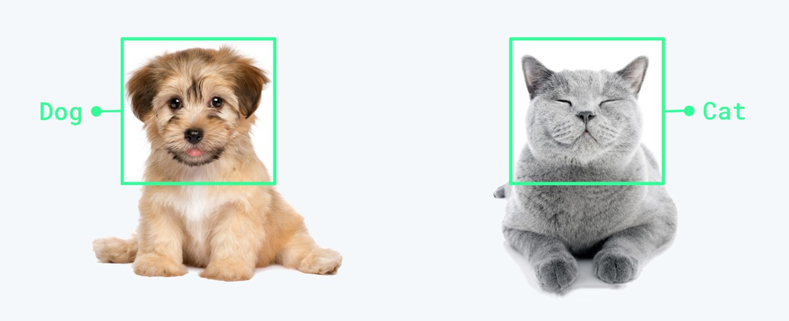
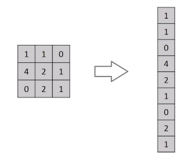
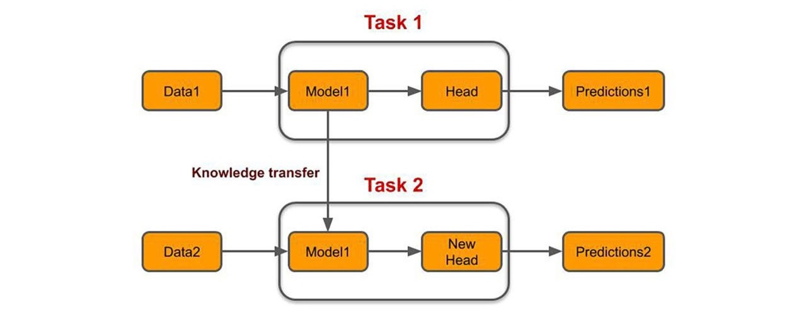
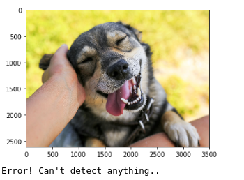
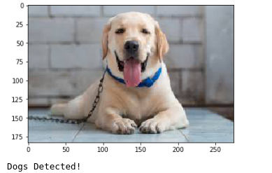
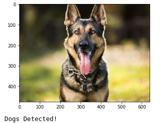
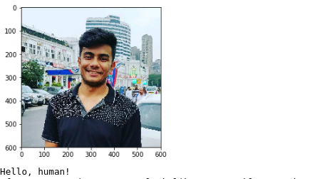

Dog Image Classification
- Category: Deep Learning
- Project date: April, 2020
- Code URL: github
Objective
The project aims to classify dog breeds through their RGB colored images using Deep Learning and Computer Vision techniques. The project is sub-divided into two parts, first is developed with complete scripting and second in jupyter notebook which can be deployed as web application.
Tech Stack
Python, OpenCV, PyTorch, Pandas
Image Classification
Image Classification is a supervised learning problem where we define a set of target classes (objects to identify in images), and train a model to recognize them using labeled example photos. The images are considered to be matrix of pixel values ranging from 0-255 which represent the intensity. Early image classification tasks were performed with data driven approaches such as Nearest Neighbour Classifier. These were not so effective approach because it comprises of compairing (L1 and L2 distances) an image from test dataset with each of the images from training data one by one. The algorithm was simple to implement but was computationally inefficient and had low accuracy on raw pixels.

Image Classification
Multi-Layered Perceptron
The fully connected feed-forward neural network architecture (MLP) is used for Image Classification. However, they are ineffective, as flattening the images of higher pixel dependencies would result in poor precision. The MLP in the case of grayscale MNIST Digit images with low pixel dimensions performs well, but is inefficient in case of complex images (with RGB values). The number of parameters to be learned is too high for the MLP network, making the model to be computationally costlier. The high parameters also mean it will need more training data, convergence time increased and it may also lead to overfitted model archtitecture.

Flattening operation of small input matrix with pixel values in MLP
Convolution Neural Networks
The CNN yield better results in classifying images as compared to traditional linear and non linear classification algorithms. This is because they reduce the number of parameters to learn and there is no need of any preprocessing for feature-extraction. The CNNs uses convolutions of the image and the filter to extract complex invariant features at each layer. The complexity of features extracted increases with depth of layers (eg. [Layer 1: edges] -> [Layer 2: shapes] -> [Layer 3: pattern of shapes] -> .... -> output). They successfully capture the spatial and temporal dependancies within the image. The important features that make CNN special from others are, Convolutions and Pooling.

Image Classification using CNN
1. Convolutions


Convolutions in CNN, Blue: Input and Green: Output
A convolution is a type of matrix operation, consisting of a kernel, a small matrix of weights, that slides over input data performing element-wise multiplication with the part of the input it is on, then summing the results into an output.
These are basically merging two sets of information. Mathematically, convolution refers to combination of two function to yield third function. In the case of CNN, convolution is the application of filters/kernels to an input image resulting in activations. Feature maps are what we get on repeated applications of such filters over the input. These feature map indicate the locations learned and strength of detected feature of input, i.e., they summarize the presence of detected features in input. The simple MLP does not consider the order and importance of neighbouring pixels. CNN on other hand, as described above, takes the advantage using convolutions.The problem of feature maps is that these are sensitive to locations of features in input. One way to adress the issue is to down sample the feature map. This is addressed by pooling.
2. Pooling
Pooling layers provide an approach to down sampling feature maps by summarizing the presence of features in patches of the feature map. Two common pooling methods are average pooling and max pooling.

Max Pooling and Average Pooling in CNN
The above discussed are the reasons why I chose CNN architecture for the purpose of image classification. Further, I used pretrained models to classify the target dataset, dog images.
Transfer Learning
The Transfer learning approach, is utilizing the selected pretrained network and then adapting of neural network to a new (similar) dataset. The approach keeps all the convolutional layers but replacing the final fully connected layers with another neural network. The base network "transfers" the learnt features to targeted network.

Among the wide range of pretrained CNN architecture I have chosen the classic models such as VGG, AlexNet, and ResNet. With the help of deep learning and computer vision frameworks, like PyTorch and OpenCV, I have developed the scripts to get accuarate predictions and good results over unseen data. Following are glimpses of my model classifying few test images of dogs into their breeds. To view the code and detailed results, follow link shared in the description box.
   
References